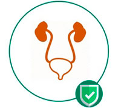

Cistīts ir aktuāls un ļoti izplatīts jautājums sievietēm. Katru gadu Lielbritānijā tiek ziņots par aptuveni 26-36 miljoniem cistīta gadījumiem. Sievietes anatomijas dēļ cistīts sievietēm ir 78 reizes biežāka problēma nekā vīriešiem (īss un plats urīnizvadkanāls atvieglo baktēriju iekļūšanu). Saskaņā ar statistiku, vienai no četrām sievietēm ir šī slimība vismaz 6 reizes dzīves laikā, un 32% sieviešu cieš no hroniska cistīta.
ATKAL CĪNIES AR SĀPĒM?

cytoforte
Postošs trieciens
cistītam un tā simptomiem

GALVENIE AKŪTA CISTĪTA SIMPTOMI
DEDZINOŠAS SAJŪTAS URINĒJOT
PAAUGSTINĀTA ĶERMEŅA TEMPERATŪRA

Cistīts ir iekaisuma process urīnpūšļa gļotādas apvalkā.
Cistītu visbiežāk izraisa baktēriju
infekcija. Galvenais cistīta cēlonis (līdz 80% gadījumu) ir Escherichia coli baktērijas - Е.сoli.
Patogēnas baktērijas iekļūst urīnpūslī caur urīnizvadkanālu, nonākot zemāk esošā infekcijas rezervuārā
- maksts (dažādas etioloģijas vulvīts un vaginīts) un zarnu kanālā (nehigiēniskas personīgās izturēšanās
rezultātā - nepareiza intīmās zonas mazgāšana).
Sieviešu uroģenitālās sistēmas anatomija veicina
augstu cistīta izplatību.
Sieviešu urīnizvadkanāls ir īsāks un platāks, tāpēc baktērijām ir vieglāk caur to iziet.
Klīniskajiem simptomiem un cistīta pazīmēm sievietēm ir izteiktas klīniskās pazīmes, kad runa ir par
akūtu slimību.
Hroniska cistīta simptomi parasti ir neskaidri: tie nav tik intensīvi, tie var
parādīties un laiku pa laikam izzūd.
Nekas nelīdzinās CytoForte. Nekādu antibiotiku. Bez sintētiskām sastāvdaļām
-

-
 Dzērveņu esence
Dzērveņu esence -
Kumelīšu esence
-
 Cinks
Cinks -
 E vitamīns
E vitamīns -
B grupas vitamīni
Dzērveņu esence: ir rūgstoša iedarbība, iznīcina E.coli dīgļa šūnas
Kumelīšu esence: palīdz atslābināt nefrogonovadu muskuļus, strauji mazinot sāpes
Cinks: reģenerē infekcijas bojātos gļotādas audus un šūnas
E vitamīns: novērš iekaisumu un atjauno uroģenitālās sistēmas darbību.
B grupas vitamīni ražo profilaktiskas vielas, kas nomāc patogēnos mikrobus
cyto forte LIELISKI BALANSĒTA IZVĒLĒTO SASTĀVDAĻU KOMBINĀCIJA
-

1 līdzeklis = 2 iedarbības
2 v 1 -
izturība pret patogēnām baktērijām
-

urīnceļu aizsardzība
KOMPONENTI IETEKMĒ URINĀLĀS TRAKCIJAS INFEKCIJAS, VEICINA NEATKARĪGU ATLABŠANU, ĀTRU SIMPTOMU NOVĒRŠANU UN SLIMĪBAS ATKĀRTOŠANĀS NOVĒRŠANU NĀKOTNĒ
CytoForte bioaktīvā formula ārstē cistītu 8 stadijās
- VEICINA BAKTĒRIJU NOVĒRŠANU UROTERIĀLĀS ŠŪNĀS 1
- PĀRVEIDO BAKTĒRIJU ŠŪNAS 1
- IZNĪCINA BAKTĒRIJAS UN BLOĶĒ TO SINTĒZI 1
- NOVĒRŠ BAKTERIĀLĀS BIOFILMAS VEIDOŠANOS 2
- PALĪDZ BAKTĒRIJĀM IZKĻŪT NO URINĀLĀ TRAKTA 1
- IETEKMĒ URĪNA SKĀBJU LĪMENI
NORMĀLS SKĀBES LĪMENIS: pH=7 - PALĪDZĒT PĀRTRAUKT INFEKCIJU URINĀRĀ TRAKTĀ
- PADARA ORGANISMU IZTURĪGĀKU PRET INFEKCIJĀM

Andris Bērzs
Urologs, medicīnas doktora grāda īpašnieks
Mani ieteikumi pacientiem ar cistītu: izvairieties no stingras sintētiskas apakšveļas, kas ir
nepatīkama jūsu ķermenim. Otrkārt, ja iespējams, palieciet gultā. Trešais un, iespējams,
vissvarīgākais punkts: lietojiet uztura bagātinātāju -
CytoForte.
Pašlaik šīs ir vienīgās ātras darbības zāles, kurām atšķirībā no antibiotikām nav blakusparādību. Pēc ārstēšanas sākšanas ir vajadzīgas tikai 17 minūtes, pēc CytoForte lietošanas. Augstu CytoForte efektivitāti nodrošina aktīvo sastāvdaļu komplekss, pret kuru baktērijas - cistītu izraisošie baktērijas - neveido imunitāti. Ārstniecības līdzeklis efektīvi iznīcina patogēnos organismus uroģenitālā sistēmā un palīdz atbrīvoties no vētrainajiem slimības simptomiem. Novērš slimību un E.Coli baktērijas 98% gadījumu, kā arī novērš slimības atkārtošanos nākotnē. .

CYTOFORTE IEPAKOJUMS SATUR 20 KAPSULAS
-

20 kapsulas iepakojumā
20 kapsulas
-

1 - no rīta , 1 - pirms gulētiešanas
2 kapsulas dienā
-

Ieteicamais kurss 30 dienas
3 iepakojumi
Jūs varat lietot papildinājumu ilgu laiku (līdz 1 mēnesim) un vajadzības gadījumā atkārtot ārstēšanas kursu gada laikā, jo uz augu bāzes esošās sastāvdaļas, kas satur CytoForte formulu, neveicina rezistences veidošanos un nav vīrišķā dzimuma baktēriju izturīgas.
Kā lietot CytoForte:
-
2 kapsulas/dienā NE MAZĀK KĀ MĒNESIPĒC UTI*ĀRSTĒŠANAS
AR ANTIBIOTIKĀM -
2 kapsulas/dienā NE MAZĀK KĀ MĒNESĪBIEŽU UTI*SIMPTOMU LAIKĀ
(>3 ĀRSTNIECĪBAS KURSI DIENĀ) -
1 kapsulas/diena NE MAZĀK KĀ MĒNESĪJA IR AUGSTĀKS RISKS
UTI*ATTĪSTĪBAI
LĪDZEKĻA SASTĀVDAĻAS PALĪDZINA UZLABOJOŠO ANTIMIKROBISKO AIZSARDZĪBU UN NOVĒRŠ TURPMĀKU UTI *
*UTI - Urinārā Trakta Infekcija
CytoForte lietošana ir iespējama šādās situācijās: pēc UTI antibakteriāla perioda, biežu UTI infekciju atkārtošanās gadījumos un gadījumā, ja ir lielāks UTI infekcijas attīstības risks, ko ietekmē nelabvēlīgi faktori (sezonālās variācijas, karstais klimats, hipotermija, stress, ceļojumi, nelabvēlīgi apstākļi, slikti higiēnas apstākļi).
VIŅI JAU IR IZMĒĢINĀJUŠI CytoForte
98% pircēju iesaka iegādāties šo produktu

Ja rodas cistīta lēkmes, galvenās lietas ir Cytoforte un seksuālā
atturība. Ja sekojat šiem noteikumiem, ikdienā varat atbrīvoties no šķebinošiem simptomiem. Es
nesaprotu cilvēkus, kuri piepilda sevi ar antibiotikām, kamēr ir tik lielisks analogs uz augu bāzes.
Starp citu, aizmirstiet par karstā ūdens maisiņu lietošanu - tie radīs labvēlīgu vidi baktēriju
augšanai.
Roze, 34 g.

Es nekad nebiju domājusi, ka kādreiz atradīšu kaut ko noderīgu
internetā. Kad vēlreiz nāca slimība, es sāku meklēt jaunas metodes cistīta ārstēšanai un atradu
CytoForte. Nevar teikt, ka tas uzreiz pierāda savu efektivitāti, taču tas darbojas. Sāpīga urinēšana
un bieža vēlme urinēt pazuda nākamajā dienā. Lieta, ko es gribētu uzsvērt, ir tā, ka 6 mēnešu laikā
nebija recidīvu, kaut arī man tika diagnosticēta hroniska slimības forma.
Vita, 37 g.

Tiešām ātrs efekts! Man bija hronisks pielonefrīts, jebkurš
saaukstēšanās vai virsstundu darba rezultāts bija recidīvs. Gandrīz četrus gadus es saņēmu
ārstēšanu, lietoju gan antibiotikas, gan dabiskos mājas līdzekļus. Esmu izmēģinājusi daudzas lietas
bez ievērojama atvieglojuma. Pēc ārsta ieteikuma pagājušajā gadā es veicu CytoForte kursu un es
atveseļojos. Kopš tā laika slimība nav atgriezusies. Tagad es iesaku šo līdzekli visiem.
Monta, 44 g.